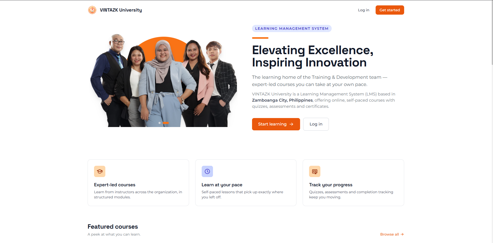

Build
your
system.
Systems people
actually use.
I'm John Kent Evangelista, a software developer. I build the systems behind real operations — records, sales, training, resident services — turning the slow, manual parts of the work into software that runs them. You don't need to know tech; just tell me what's slowing you down.
Zamboanga City // works anywhere in the Philippines

If any of these
sound like you.
- “Our records are still on paper.” Business systems — records, inventory, bookings
- “Residents wait days for a simple document.” Barangay & LGU — records, requests, reporting
- “We need to train people — and prove they finished.” Learning platforms with real completion records
- “People can't find us online.” Websites, directories and portals that get found
- “My team retypes the same data all day.” Automation that removes the retyping
- “We already have a system… it's half-broken.” Rescue, repair and take over what exists
Real systems,
in use today.
 LiveFull-stack build
ZamGo
City-wide business directory — Zamboanga businesses indexed and searchable by category.
636+ businesses indexed
Visit the site
LiveFull-stack build
ZamGo
City-wide business directory — Zamboanga businesses indexed and searchable by category.
636+ businesses indexed
Visit the site
 LiveSenior Developer & Team Lead
Vintech
The operations platform behind VINTAZK Outsourcing — the whole team runs its day on it.
Runs a whole outsourcing company's day
Visit the site
LiveSenior Developer & Team Lead
Vintech
The operations platform behind VINTAZK Outsourcing — the whole team runs its day on it.
Runs a whole outsourcing company's day
Visit the site

LiveVintazk University University Full learning management system — course management, learner tracking, content delivery, role-based access. Training, tracked and provable Visit the siteAlso built
Barangay records and resident services, off paper and into a system staff can run themselves.
Automated exam checking with computer vision — point a camera at the answer sheet, get the score. Built at WMSU.
Experience &
education.
Senior Developer · VINTAZK Outsourcing
Leading builds and mentoring the dev team.
System Developer · VINTAZK Outsourcing
Built the company's core systems end to end — from the database to the screen.
Jr. Frontend Developer · AKA Software Inc.
Built interfaces for client websites.
QA Specialist · WMSU
Tested university systems and automated the repetitive checks.
Every build ends
the same way.
Sitting down and talking it through — what's slowing you down, and what it would take to fix. That part costs nothing.